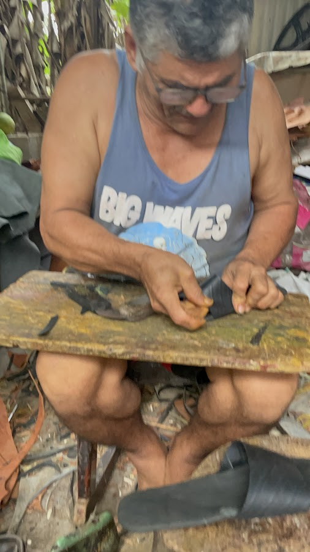

Misión
Transformar llantas desechadas en calzado duradero y cómodo que apoye la economía circular y la artesanía local.
SOBRE ECOSLIDES
Transformamos llantas desechadas en sandalias duraderas y cómodas, elaboradas con propósito, probadas en la práctica y creadas pensando en reducir su impacto.
NUESTRA HISTORIA
EcoSlidespty comenzó con una pregunta: ¿por qué tantas llantas se convierten en desechos cuando su material está hecho para durar?

En muchas comunidades, las llantas desechadas se acumulan, se queman o terminan en la naturaleza, causando contaminación y daños a largo plazo. Son resistentes, voluminosas y tardan mucho en degradarse.
Queríamos crear algo práctico y accesible: calzado que le diera una segunda vida al caucho y, a la vez, apoyara la artesanía local y la producción responsable.
Hoy, los prototipos de EcoSlidespty evolucionan mediante pruebas prácticas y mejoras continuas, con atención a la comodidad, la durabilidad y los materiales de menor impacto.
Idea e investigación
Estudiamos el problema de los residuos de llantas y exploramos cómo reutilizar el caucho de forma segura.
Prototipos
Creamos y probamos varias versiones para mejorar la comodidad, el agarre y la durabilidad.
Perfeccionamiento
Mejoramos el ajuste, los acabados y el proceso para reducir los residuos y aumentar la calidad.
NUESTRA MISIÓN
La misión, la visión y los valores que dan forma a EcoSlides.
Transformar llantas desechadas en calzado duradero y cómodo que apoye la economía circular y la artesanía local.
Un futuro en el que los productos cotidianos generen menos residuos, duren más y tengan un impacto real en la comunidad.
EL EQUIPO
Un equipo pequeño con un gran propósito, construido mediante la colaboración y la mejora continua.
Cofundador
Cofundador
POR QUÉ ECOSLIDES
Un proceso sencillo, materiales resistentes y un producto diseñado para durar.
Descubre cómo funciona EcoSlidespty, desde los materiales hasta el proceso, y cómo las llantas recicladas pueden convertirse en productos útiles para el día a día.